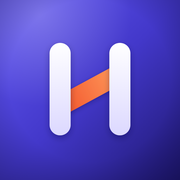

Helm
Support
Helm is a weight and fitness coach for iPhone. It plans your meals and workouts around your goal, tracks food, water and weight with Apple Health, and adjusts your targets each week from your real progress.
Need help? Email kernan6580@gmail.com. Tell us what you were doing and what happened, and include your iPhone model and iOS version if you can. We usually answer within two business days.
Common questions
How does Helm set my calories and protein?
From your age, height, weight, activity and goal, using published research. Each week, the weekly check compares your weight trend with what you've eaten and may suggest a small change. Nothing changes unless you approve it. Helm doesn't set calorie targets for anyone under 18 or during pregnancy or breastfeeding.
How do I log food?
Tap the + button. You can search, scan a barcode, say what you ate, type it, or log a planned meal in one tap. With Helm Pro you can also snap a photo. You check every food and amount before anything is logged.
How do I change or delete something I logged?
Right after logging or deleting, tap Undo in the bar at the bottom of the screen. Any time later, tap the food on Today to change or delete it. Every log is also in Settings.
I stay up past midnight. Can my day end later?
Yes. In Settings, under Your day, set A new day starts at to a time you're usually asleep.
Why isn't my Apple Watch workout or scale weight showing?
Open the Health app, tap your profile picture, then Apps → Helm, and make sure Helm can read Workouts and Weight. Then pull down on Today to refresh.
How do I cancel Helm Pro?
On your iPhone, open Settings, tap your name, then Subscriptions → Helm. Apple handles all billing. For a refund, use reportaproblem.apple.com.
How do I delete my data?
In Helm, open Settings → Delete all Helm data. You can also remove everything Helm saved to Apple Health at the same time. See the privacy policy for what Helm keeps and where.
Helm gives general guidance on food, weight and exercise. It isn't medical advice. Talk to your doctor before making big changes, especially if you have a health condition.